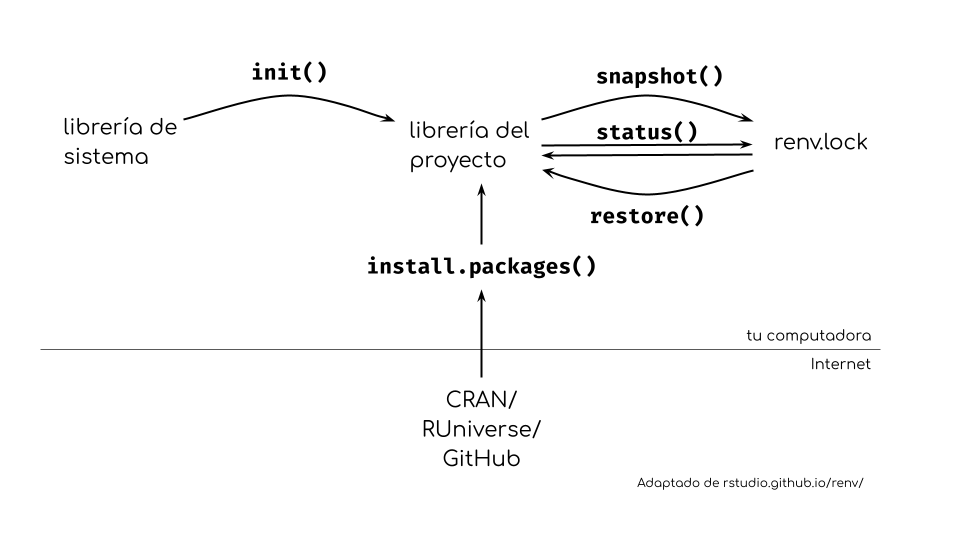

Proyectos reproducibles con renv
Ningún software vive en una burbuja aislada. En particular, cualquier código de análisis de datos va a depender de paquetes externos, como ggplot2 para crear gráficos, data.table para preparar los datos, knitr para generar informes, y así sucesivamente.
Pero los paquetes que se mantienen activamente cambian constantemente base para corregir errores, añadir o eliminar funciones, o modificar el comportamiento. Estos cambios pueden llegar a romper el código de tu análisis o crear diferencias sutiles (o no tan sutiles) en el resultado.
Por eso es importante tanto registrar las versiones de los paquetes que usás en un proyecto como ofrecer un mecanismo para que otros puedan instalar las versiones correctas en su máquina local.
Si bien listar los paquetes que se utilizan en un README o script es un primer paso, a la hora de restaurar el proyecto, instalar todos los paquetes manualmente es mucho trabajo. Si además, 2 de los proyectos usan version distintas de un paquete, es muy importante poder aislar el entorno de cada uno para poder tener las 2 versiones del paquete y que el código en cada proyecto funcione.
El paquete renv resuelve estos problemas.
La idea por detrás de renv es que cada proyecto tenga tener un entorno de R específico con su propia biblioteca donde se instalen los paquetes. Los paquetes instalados en la biblioteca del proyecto son independientes de la biblioteca personal, por lo que podés instalar una versión específica de un paquete en un proyecto sin cambiar la versión utilizada por otro.
El estado de esta biblioteca del proyecto se registra en un lock file: un archivo llamado renv.lock que contiene la versión, el origen y otros metadatos de cada paquete utilizado en el proyecto. Renv utilizará este archivo para restaurar la biblioteca del proyecto a su estado correcto si, por alguna razón, faltan paquetes o hay paquetes con una versión incorrecta.
La “biblioteca global” de R no es nada menos que la carpeta donde se instalan los paquetes. Podés revisar donde está esa carpeta en tu computadora con:
.libPaths()Por otro lado, una “biblioteca de proyecto” será una carpeta distinta (adentro del proyecto) que guarde (o linkee) los paquetes necesario en este específico proyecto, aislada del resto.
renv hace uso de esta diferencia para poder controlar que paquetes están disponibles para cada proyecto.
Usar renv en tu proyecto
Lo bueno de renv es que automatiza muchas cosas y te deja trabajar sin interferir en lo que estás haciendo. Para empezar a trabajar con renv, primero tenés que inicializar el entorno local del proyecto conrenv::init().
Esta función escaneará automáticamente todos tus scripts de R y archivos RMarkdown o Quarto, detectará sus dependencias y almacenará las versiones de los paquetes actualmente instalados en el archivo renv.lock, para luego instalarlos en la biblioteca del proyecto.
Deberías ver un mensaje como este:
No issues found -- the project is in a consistent state.Además, en la carpeta raíz de tu proyecto verás ahora un archivo llamado renv.lock y una carpeta llamadarenv. El primero almacena la versión y otra información de tus paquetes de R (e incluso la versión del propio R), mientras que la carpeta almacena la biblioteca de tu proyecto.
Una vez hecho esto, puedes seguir trabajando en tu proyecto como de costumbre, instalando, eliminando y actualizando paquetes como lo harías normalmente. La diferencia es que ahora todo eso solo afectará a la biblioteca del proyecto. Si actualizas un paquete en tu proyecto, los demás proyectos seguirán usando la versión global (o sus versiones locales si usas renv con ellos). La otra cara de la moneda es que actualizar paquetes fuera del proyecto no afectará a las versiones de los paquetes que el proyecto utiliza.
Verás un error que te dirá que no hay ningún paquete llamado ‘ggplot2’. Esto es sorprendente porque probablemente tengas ggplot2 instalado en tu biblioteca global. Sin margo no está instalado en la biblioteca de este proyecto.
Ahora podes revisar el estado del archivo renv.lock conrenv::status(), deberías obtener algo parecido a esto:
The following package(s) are used in this project, but are not installed:
- ggplot2
See `?renv::status` for advice on resolving these issues.Este mensaje muestra los paquetes y su estado: si están instalados (en la biblioteca del proyecto), si están registrados en el archivo renv.lock y si se ha detectado que tu proyecto los está utilizando.
En este caso, se está utilizando ggplot2 (cuando agregamos library(ggplot2)), pero no está instalado (en la biblioteca del proyecto) y tampoco está registrado en el archivo renv.lock.
Ahora que ggplot2 está instalado, deberías poder renderizar el archivo Quarto. Sin embargo, al ejecutar renv::status() aparece algo como esto:
The following package(s) are in an inconsistent state:
package installed recorded used
colorspace y n y
fansi y n y
farver y n y
ggplot2 y n y
gtable y n y
isoband y n y
labeling y n y
lattice y n y
MASS y n y
Matrix y n y
mgcv y n y
munsell y n y
nlme y n y
pillar y n y
pkgconfig y n y
RColorBrewer y n y
scales y n y
tibble y n y
utf8 y n y
viridisLite y n y
withr y n y
See ?renv::status() for advice on resolving these issues.Esta tabla es similar a la que viste antes. La lista de paquetes corresponde a ggplot2 y sus dependencias. Todos están instalados y se utilizan, pero aún no están registrados en el archivo renv.lock. Para registrar estos paquetes, debes actualizar el archivo renv.lock con la función renv::snapshot(). No es recomendable editar el archivo renv.lock a mano ya que hay riesgo de romper la sintaxis (si lo hacés, revisá que el archivo funcione con renv::lockfile_validate().
Cuando todos los paquetes utilizados estén instalados y registrados con sus versiones correctas, renv::status() mostrará:
No issues found -- the project is in a consistent state.Estas tres funciones (renv::init(),renv::snapshot()yrenv::status()) son suficientes para trabajar localmente en un entorno controlado y con un archivo renv.lock actualizado.

renv para la reproducibilidad
Todo este trabajo no serviría de nada si no hubiera una forma de usar el archivo renv.lock para recrear el mismo entorno de forma consistente. Aquí es donde renv se destaca.
Cualquiera que quiera instalar los mismos paquetes que vos usas en tu proyecto con sus versiones exactas puede descargar tu código, abrir el proyecto y usarrenv::restore(). Esto instalará todos los paquetes necesario en la biblioteca del proyecto local para que puedan correr el código sin errores. Esto además tiene la ventaja de que no afectará la biblioteca global, por lo que otros proyectos o código seguirán funcionando sin problemas.
No es necesario compartir la carpeta renv/library, que contiene los paquetes instalados. Posiblemente sea una carpeta pesada y el contenido se puede recrear fácilmente con renv.
A la hora de compartir tu proyecto solo será necesario incluir el archivo renv.lock (y el archivo rev/activate.R, que es un script genial que instala automáticamente la versión correcta de renv si es necesario). Si usás git, no hay mucho de que preocuparse, ya que renv crea automáticamente un archivo especial llamado renv/.gitignore donde lista todo aquello que no debe incluirse en el repositorio local o remoto.
Consejos extras
El archivo renv.lock
El archivo renv.lock contiene una “foto” de la biblioteca del proyecto en un momento dado, pero no garantiza que esto se corresponda con el resultado renderizado. El archivo renv.lock podría estar desactualizado cuando se ejecute el código, o el código podría haberse ejecutado con una versión anterior del archivo renv.lock. Depende de vos renderizar siempre tu archivo cuando el proyecto y el archivo se encuentren actualizados.
Detección de dependencias
La detección automática de dependencias es genial, pero algo limitada. Entiende las formas más comunes y obvias en que se puede cargar un paquete en un script, pero puede fallar si usas métodos más indirectos. Puede fallar si utilizas una funcionalidad de un paquete que depende de paquetes sugeridos (por ejemplo,ggplot2::geom_hex()requiere el paquete hexbin, por lo que debes añadir unlibrary(hexbin) explícito en algún lugar de tu proyecto).
Instalación de paquetes
A veces la instalación de paquetes falla.
Un caso común sería si instalaste un paquete compilado por CRAN en Windows, pero la persona que intenta ejecutar restore() para restaurar el proyecto está usando Linux. Como CRAN no ofrece paquetes compilados para Linux, renv intentará instalarlo desde el código fuente, lo que puede fallar si la compilación requiere dependencias del sistema que faltan. En este caso, renv no puede hacer nada, pero el problema se puede resolver instalando las dependencias del sistema pertinentes y volviendo a intentar restore().
La instalación del paquete fallará si no se puede acceder al repositorio remoto que aloja el paquete, ya sea por problemas de conexión local, porque está caído o porque se ha eliminado. De nuevo, no hay nada que renv pueda hacer en esa situación.
La instalación de un paquete puede fallar si este requiere compilación, pero el equipo no tiene suficiente RAM para compilarlo. Este es el caso del paquete sf, que no se puede compilar en Posit Cloud del plan gratuito.
Dependencias del sistema
Además, algunos paquetes de R requieren que se instalen ciertas dependencias del sistema para funcionar. renv aún no gestiona estos casos, por lo que si estás usando un paquete que necesita dependencias del sistema, la instalación podría fallar si estas no se cumplen. Incluso si la instalación sale bien, es posible que un paquete no funcione si tiene dependencias durante la ejecución que no se cumplen.
Incluso en el caso de que se cumplan las dependencias del sistema, renv no garantiza que estas sean las mismas versiones que se utilizan para ejecutar el análisis. Esto significa que, si los resultados dependen de la versión de alguna dependencia del sistema, renv no podrá garantizar la reproducibilidad.
¡Esto incluye la propia versión de R!
Una herramienta para garantizar que todo el sistema sea estable es el uso de containers.